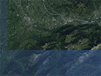

Example of control transparency of tile material in tileset.
Requirement: Tileset Control
Tileset Shader
Tileset Shader
Usage instructions:
Add this script to map GameObject.
Select «Materials & Shaders / Tileset Shader - Tileset».
Add this script to map GameObject.
Select «Materials & Shaders / Tileset Shader - Tileset».
TilesetFadeExample.cs
/* INFINITY CODE 2013-2016 */
/* http://www.infinity-code.com */
using System;
using System.Collections.Generic;
using System.Linq;
using UnityEngine;
namespace InfinityCode.OnlineMapsExamples
{
[AddComponentMenu("Infinity Code/Online Maps/Examples (API Usage)/TilesetFadeExample")]
public class TilesetFadeExample : MonoBehaviour
{
// List of items that are animated.
private List<TilesetFadeExampleItem> items = new List<TilesetFadeExampleItem>();
// Use this for initialization
private void Start()
{
// Gets Tileset control instance
OnlineMapsTileSetControl control = OnlineMapsTileSetControl.instance;
if (control == null)
{
Debug.LogError("You must use the Tileset control.");
return;
}
// Subscribe to change material event.
control.OnChangeMaterialTexture += OnChangeMaterialTexture;
}
// This event called when tile texture changed.
private void OnChangeMaterialTexture(OnlineMapsTile tile, Material material)
{
// Try get tile from list
TilesetFadeExampleItem item = items.FirstOrDefault(i => i.tile == tile);
// if there is custom data associated with 'tile', just update it
if (item != null)
{
item.material = material;
item.Update();
}
// else a animation data was not found in the master list but if there is custom data associated with 'tile'
else if (tile.customData != null)
{
item = (TilesetFadeExampleItem) tile.customData;
if (!item.finished)
{
items.Add(item);
item.Update();
}
else material.color = TilesetFadeExampleItem.toColor;
}
// else if the tile has a texture and that texture is not a default texture
else if (tile.texture != null && tile.texture != OnlineMaps.instance.defaultTileTexture)
{
item = new TilesetFadeExampleItem(tile, material);
item.Update();
items.Add(item);
}
// else set initial color
else
{
material.color = TilesetFadeExampleItem.fromColor;
}
}
// Update is called once per frame
private void Update()
{
// Remove all disposed tiles
items.RemoveAll(i => i.disposed);
// Update alpha for tiles
foreach (TilesetFadeExampleItem item in items) item.Update();
// Remove all finished tiles
items.RemoveAll(i => i.finished);
}
}
// Class for instance of tile item
public class TilesetFadeExampleItem
{
// Time of fade
private const float animLengthInTicks = 10000000;
// Fade from color
public static Color fromColor = new Color(1, 1, 1, 0);
// Fade to color
public static Color toColor = new Color(1, 1, 1, 1);
// Animation finished
public bool finished = false;
// Tile material
public Material material;
// Reference to main, standard tile
public OnlineMapsTile tile;
// Tile alpha (0-1)
private float alpha = 0;
// Time of start animation
private long startTicks;
// Check tile disposed
public bool disposed
{
get { return tile.status == OnlineMapsTileStatus.disposed || tile.status == OnlineMapsTileStatus.error; }
}
public TilesetFadeExampleItem(OnlineMapsTile tile, Material material)
{
this.tile = tile;
this.material = material;
startTicks = DateTime.Now.Ticks;
tile.customData = this;
}
// Update tile fade value
public void Update()
{
alpha = (DateTime.Now.Ticks - startTicks) / animLengthInTicks;
// Check animation finish
if (alpha >= 1)
{
alpha = 1;
finished = true;
// Finish. Custom data will be disposed on tile.Dispose.
}
material.color = Color.Lerp(fromColor, toColor, alpha);
}
}
}